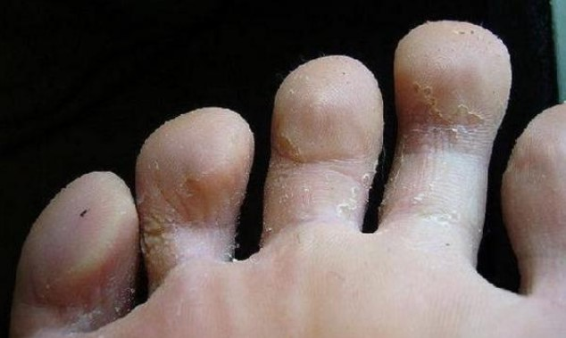

Здравейте на всички! Това съм отново аз-Камила! Благодаря, че продължавате да ме четете. Не съм научила кой знае какво ново. Преди да започна да пиша този блог, дори се чудех, какво точно да напиша. Доста седях, пих кафе и на третата чаша разбрах, че искам да споделя нещо полезно. Това за мен е едно забавление и развлечение.
Ще поговорим за нещо сериозно
Да! Реших да напиша как хванах гъбички във фитнеса и как ги преодолях. Това беше дълго, трудно, но в крайна сметка бобедих тази гадна зараза и сега краката ми пак изглеждат здрави.
Опитвам се да ходя на фитнес поне два пъти седмично. Не правя нищо особено: по принцип, тичам малко, разтягам се, работя с дъмбели. Не мога да кажа, че прекалено много работя, но се старая и да не мързелу.
Приятелките ми дори мислят, че отивам на фитнес, за да си отдъхна от децата и мъжа ми. Ха-ха! Естествено !!! :)) Всеки иска да се отдъхне малко от ежедневните си задължения.
Гъбички във фитнеса? Не може да бъде!
Веднъж забелязах, че между пръстите на краката ми се появиха гъбички. Моите красиви крака! Отначало мислех, че сърбежът ще отмине сам, но не мина и дори кожата започна да се напуква.
Откъде дойде? Мисля, че вина за това има душът в фитнеса. И това е най-обидното, защото много следя за личната си хигиена. Мия се всеки ден, винаги с чехлите си вземам душ във фитнес залата.
Как се случи така, все още е загадка за мен. Но все пак продължавам да правя същата грешка, да се къпя там.
Как аз премахнах гъбичките
Първото нещо, което исках да направя, беше да полудея и откъсна с нещо цялата заразена кожа! Сега разбирам колко е хубаво, че не го направих. Това не би могло да премахне проблема, а само можеше да доведе до инфекции.
Затова си поръчах противогъбични лепенки.
Прочетох много положителни отзиви за тях. Вярно, една моя приятелка ги използва и тя просто каза, че ефектът е горе долу. Но все пак аз реших да ги опитам, защото мнозина все още го препоръчват. Cигурно, не напразно.
Но, както и казваше приятелката ми, ефекта беше слаб. В даден момент имаше подобрение, но след това гъбичките започнаха пак да растат c нова сила.

След това пих някакви хапчета, но резултат от тях също нямаше. Гъбичките както изчезваха, така и се появяваха с нова сила.
Повече никакви гъбички
След такива неуспешни експерименти вече напълно се отчаях. Но тук сестрата на съпруга ми предложи друго средство. Тя каза, че тази опция определено ще ми помогне - и няма за какво да се притеснявам.
Поръчах този крем иииии ... гъбичките започнаха да изчезват уверено и бързо, докато не изчезнаха напълно! Чудех се защо този крем работи толкова добре. Ще се опитам да обясня на разбираем език: той действа върху тези клетки на кожата, в които живее гъбичната инфекция. Той не позволява на гъбичките да живеят нормално живота си и възстановява външния вид на кожата. Освен това, след него няма петна или последствия от гъбичките по кожата и ноктите.
Имунитета !!! Почти забравих! Кремът не само премахва гъбичките, но и защитава и укрепва кожата, така че този проблем да не се появи отново!
Сигурна съм, че всичко работи, защото оттогава не съм имала проблеми с гъбичките, въпреки че продължавам да ходя на фитнес и ползвам този злополучен душ.
Гъбичките изчезнаха
Това е всичко за мен! Ако тази история е била полезна за някого, пишете в коментарите. Е, и кой с какво премахва гъбичките , също ми е интересно.
P.S.Тука ме замериха от всички страни със съобщения и молби да напиша името на крема. Пиша го тук, за да бъде точно. Име на чудодейния крем — .
Ето го сайта, където поръчах !
ВНИМАНИЕ! Пазете се от фалшификати! може да се поръча само в ОФИЦИАЛНИЯ САЙТ
Коментари:
Reply Share
Reply Share
Reply Share
Reply Share
Reply Share
Reply Share
Reply Share
Reply Share
Reply Share
Reply Share
Reply Share
Reply Share